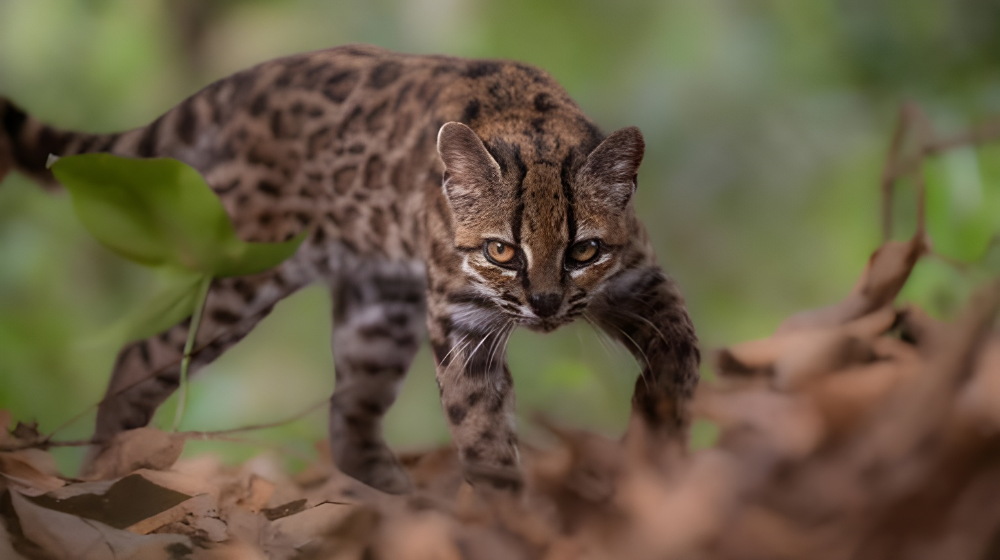

Un « chat bizarre » recueilli dans un refuge, près de dix ans de recherches et 38 génomes analysés : le 17 septembre 2026, une équipe internationale a présenté dans la revue Current Biology une nouvelle espèce de félin sauvage du genre Leopardus, baptisée Leopardus tilcayo. Connu des communautés locales des Yungas, ce petit chat-tigre devient la première espèce féline nouvellement décrite depuis le chat des pampas, en 1923.
L'histoire commence par hasard. Vers 2016, un habitant de la région trouve un chaton tacheté près d'une forêt. Le croyant domestique, il l'élève pendant environ un an, avant de comprendre qu'il s'agit d'un animal sauvage : le petit félin s'est mis à s'en prendre aux poules des voisins. La famille le confie alors au refuge animalier de Senda Verde, dans les Yungas.
Alertée par un appel au sujet d'un « chat bizarre », la biologiste bolivienne Paola Nogales-Ascarrunz, exploratrice de National Geographic qui dirige un programme de conservation des félins sauvages en Bolivie, remarque qu'il ne correspond à aucune espèce connue. Elle le prend d'abord pour un représentant singulier de Leopardus tigrinus, avant que les analyses génétiques n'établissent qu'il s'agit d'une lignée à part. Il aura fallu près de dix ans de travail pour aboutir à la publication du 17 septembre 2026.
Les chats-tigres, petits félins tachetés d'Amérique centrale et d'Amérique du Sud regroupés dans le genre Leopardus, sont des espèces dites « cryptiques » : elles sont pratiquement impossibles à distinguer les unes des autres sur la seule base de leur apparence. Le tilcayo n'était pourtant pas inconnu des habitants des Yungas, qui l'appelaient ainsi ; mais la science le rattachait jusque-là à Leopardus tigrinus, classé « vulnérable » par l'UICN.
Les chercheurs ont choisi de conserver ce nom local plutôt que d'en inventer un autre. Selon Paola Nogales-Ascarrunz, il ne renvoie à aucun mot connu du quechua ou de l'aymara : c'est un savoir transmis au sein des communautés, qu'elle tenait à préserver.
Le tilcayo est un peu plus petit qu'un chat domestique. Il mesure de 42,5 à 50,5 cm de la tête au corps, pour une queue de 25 à 26,5 cm, et pèse environ 1,4 kg. Son pelage brun clair est couvert de grandes rosettes brun foncé à noires, souvent ouvertes et irrégulières, et ses oreilles sont arrondies. L'individu de référence (l'holotype) est un mâle adulte, rattaché à la localité d'Arapata, dans la province de Nor Yungas (département de La Paz), à 1 570 mètres d'altitude — dans une région située à environ 90 kilomètres au nord-est de La Paz.
On sait en revanche très peu de choses de son comportement et de son mode de vie : les observations disponibles sont rares et la taille de sa population reste inconnue.
Le chat des pampas, décrit en Uruguay, est la dernière espèce de félin nouvellement décrite avant le tilcayo : plus de cent ans se sont écoulés.
Un habitant recueille un chaton tacheté et l'élève environ un an, le prenant pour un chat domestique. Confié au refuge Senda Verde, l'animal attire l'attention de Paola Nogales-Ascarrunz.
Près de dix ans de recherches : séquençage de génomes, comparaison avec des échantillons récents et des spécimens conservés dans des musées.
Publication dans Current Biology de l'étude « Phylogenomics and museomics reveal five distinct species of tiger cats in South America ». L'Université d'Anvers, dont le chercheur Jonas Lescroart a co-dirigé le travail, annonce la découverte.
L'AFP, la RTBF et la presse internationale relaient l'annonce : c'est la première nouvelle espèce de félin décrite depuis plus d'un siècle.
Pour démêler cet arbre généalogique complexe, l'équipe internationale — associant notamment des chercheurs boliviens, belges et brésiliens — a analysé 38 génomes entiers du genre Leopardus. Une partie provient de spécimens conservés dans des musées : la « muséomique » a ainsi fourni les premières données génétiques de l'espèce type, Leopardus tigrinus, à partir de six spécimens originaires des Guyanes.
Le résultat est net : les chats-tigres étudiés regroupent cinq espèces distinctes — Leopardus guttulus, L. emiliae, L. pardinoides (limité aux Andes du Nord), L. tigrinus (avec une nouvelle sous-espèce du Pérou, L. t. antisuyo) et le tilcayo. Ce dernier se serait séparé de son plus proche parent il y a environ 1,4 million d'années. Les chercheurs avancent que les variations climatiques du Pléistocène et la fragmentation des forêts de montagne ont pu favoriser son isolement.
| Espèce | Place dans l'étude |
|---|---|
| L. tigrinus | Espèce type ; nouvelle sous-espèce L. t. antisuyo (Pérou) |
| L. guttulus | Espèce déjà proposée, confirmée |
| L. emiliae | Espèce déjà proposée, confirmée |
| L. pardinoides | Confirmée ; limitée aux Andes du Nord |
| L. tilcayo | Nouvelle espèce ; Yungas boliviennes |
« Nous attirons ainsi l'attention sur l'incroyable richesse naturelle de la Bolivie. »
— Jonas Lescroart, Université d'Anvers (via Belga/RTBF)« Cette fois, c'est un chat. C'est vraiment nouveau. »
— Paola Nogales-Ascarrunz, NBC News, 17 sept. 2026 (traduit de l'anglais)Les Yungas sont des forêts de nuages accrochées au versant oriental des Andes, là où la cordillère rencontre le bassin amazonien. Selon Paola Nogales-Ascarrunz, elles subissent une pression croissante : déforestation, expansion agricole, incendies d'origine humaine et exploitation minière. Restaurer les parcelles brûlées, protéger la forêt native et maintenir les connexions entre habitats figurent parmi les priorités urgentes.
Sur le plan de la conservation, le tilcayo était jusqu'ici englobé dans Leopardus tigrinus. L'UICN reconnaît aujourd'hui deux espèces de chats-tigres, L. tigrinus et L. guttulus, toutes deux classées « vulnérables », et n'a pas encore évalué le tilcayo. Les auteurs ont transmis leurs résultats à l'UICN avant une réévaluation prévue, où chaque espèce nouvellement délimitée devrait être examinée séparément. Jonas Lescroart estime que le tilcayo pourrait alors être jugé en danger. Les chercheurs espèrent aussi que cette découverte permettra de « débloquer davantage de moyens » pour ces félins souvent en situation précaire, tandis que Paola Nogales-Ascarrunz prépare l'installation de pièges photographiques dans les Yungas pour rechercher d'autres indices de sa présence.
Le 17 septembre 2026, un animal que les habitants des Yungas appelaient déjà tilcayo est passé du statut de chat mal identifié à celui d'espèce reconnue par la science. Cette reconnaissance est un point de départ plus qu'une conclusion : la population reste à estimer, le comportement à documenter et la réévaluation de l'UICN à venir. Elle rappelle surtout que des forêts encore mal explorées abritent une biodiversité fragile, menacée par la déforestation, l'agriculture, les incendies et les mines — et que la survie de ce petit félin dépendra de la protection de ces montagnes boisées.
Un «gato raro» acogido en un refugio, cerca de diez años de investigación y 38 genomas analizados: el 17 de septiembre de 2026, un equipo internacional presentó en la revista Current Biology una nueva especie de felino silvestre del género Leopardus, bautizada Leopardus tilcayo. Conocido por las comunidades locales de los Yungas, este pequeño gato tigre se convierte en la primera especie felina descrita desde el gato de las pampas, en 1923.
La historia empieza por casualidad. Hacia 2016, un habitante de la región encuentra un gatito manchado cerca de un bosque. Creyéndolo doméstico, lo cría durante aproximadamente un año, hasta que comprende que se trata de un animal silvestre: el pequeño felino había empezado a atacar a las gallinas de los vecinos. La familia lo entrega entonces al refugio de animales Senda Verde, en los Yungas.
Alertada por una llamada sobre un «gato raro», la bióloga boliviana Paola Nogales-Ascarrunz, exploradora de National Geographic que dirige un programa de conservación de felinos silvestres en Bolivia, advierte que no corresponde a ninguna especie conocida. En un primer momento lo toma por un ejemplar singular de Leopardus tigrinus, hasta que los análisis genéticos demuestran que se trata de un linaje aparte. Hicieron falta cerca de diez años de trabajo para llegar a la publicación del 17 de septiembre de 2026.
Los gatos tigre, pequeños felinos manchados de América Central y del Sur agrupados en el género Leopardus, son especies llamadas «crípticas»: resultan prácticamente imposibles de distinguir entre sí solo por su aspecto. El tilcayo, sin embargo, no era desconocido para los habitantes de los Yungas, que lo llamaban así; pero la ciencia lo vinculaba hasta ahora a Leopardus tigrinus, clasificado como «vulnerable» por la UICN.
Los investigadores decidieron conservar ese nombre local en lugar de inventar otro. Según Paola Nogales-Ascarrunz, no remite a ninguna palabra conocida del quechua ni del aimara: es un saber transmitido dentro de las comunidades, que ella quería preservar.
El tilcayo es algo más pequeño que un gato doméstico. Mide de 42,5 a 50,5 cm de la cabeza al cuerpo, con una cola de 25 a 26,5 cm, y pesa alrededor de 1,4 kg. Su pelaje pardo claro está cubierto de grandes rosetas de color pardo oscuro a negro, a menudo abiertas e irregulares, y sus orejas son redondeadas. El individuo de referencia (el holotipo) es un macho adulto, vinculado a la localidad de Arapata, en la provincia de Nor Yungas (departamento de La Paz), a 1 570 metros de altitud, en una zona situada a unos 90 kilómetros al noreste de La Paz.
En cambio, se sabe muy poco de su comportamiento y su modo de vida: las observaciones disponibles son escasas y el tamaño de su población sigue siendo desconocido.
El gato de las pampas, descrito en Uruguay, es la última especie de felino recién descrita antes del tilcayo: han pasado más de cien años.
Un habitante recoge un gatito manchado y lo cría durante aproximadamente un año, creyéndolo un gato doméstico. Entregado al refugio Senda Verde, el animal llama la atención de Paola Nogales-Ascarrunz.
Cerca de diez años de investigación: secuenciación de genomas y comparación con muestras recientes y con especímenes conservados en museos.
Publicación en Current Biology del estudio «Phylogenomics and museomics reveal five distinct species of tiger cats in South America». La Universidad de Amberes, cuyo investigador Jonas Lescroart codirigió el trabajo, anuncia el hallazgo.
La AFP, la RTBF y la prensa internacional difunden el anuncio: es la primera especie nueva de felino descrita en más de un siglo.
Para desenredar este complejo árbol genealógico, el equipo internacional —que reúne, entre otros, a investigadores bolivianos, belgas y brasileños— analizó 38 genomas completos del género Leopardus. Una parte procede de especímenes conservados en museos: la «museómica» aportó así los primeros datos genéticos de la especie tipo, Leopardus tigrinus, a partir de seis especímenes originarios de las Guayanas.
El resultado es claro: los gatos tigre estudiados agrupan cinco especies distintas —Leopardus guttulus, L. emiliae, L. pardinoides (restringido a los Andes del norte), L. tigrinus (con una nueva subespecie de Perú, L. t. antisuyo) y el tilcayo—. Este último se habría separado de su pariente más cercano hace alrededor de 1,4 millones de años. Los investigadores sostienen que las variaciones climáticas del Pleistoceno y la fragmentación de los bosques de montaña pudieron favorecer su aislamiento.
| Especie | Lugar en el estudio |
|---|---|
| L. tigrinus | Especie tipo; nueva subespecie L. t. antisuyo (Perú) |
| L. guttulus | Especie ya propuesta, confirmada |
| L. emiliae | Especie ya propuesta, confirmada |
| L. pardinoides | Confirmada; limitada a los Andes del norte |
| L. tilcayo | Especie nueva; Yungas bolivianos |
« Llamamos así la atención sobre la increíble riqueza natural de Bolivia. »
— Jonas Lescroart, Universidad de Amberes (vía Belga/RTBF; traducido del francés)« Esta vez es un gato. Es realmente novedoso. »
— Paola Nogales-Ascarrunz, NBC News, 17 sept. 2026 (traducido del inglés)Los Yungas son bosques nublados aferrados a la vertiente oriental de los Andes, allí donde la cordillera se encuentra con la cuenca amazónica. Según Paola Nogales-Ascarrunz, sufren una presión creciente: deforestación, expansión agrícola, incendios de origen humano y minería. Restaurar las parcelas quemadas, proteger el bosque nativo y mantener las conexiones entre hábitats figuran entre las prioridades urgentes.
En materia de conservación, el tilcayo estaba hasta ahora englobado en Leopardus tigrinus. La UICN reconoce hoy dos especies de gatos tigre, L. tigrinus y L. guttulus, ambas clasificadas como «vulnerables», y aún no ha evaluado al tilcayo. Los autores transmitieron sus resultados a la UICN antes de una reevaluación prevista, en la que cada especie recién delimitada debería examinarse por separado. Jonas Lescroart estima que el tilcayo podría entonces ser considerado en peligro. Los investigadores esperan además que este descubrimiento permita «desbloquear más recursos» para estos felinos, a menudo en situación precaria, mientras Paola Nogales-Ascarrunz prepara la instalación de cámaras trampa en los Yungas para buscar otros indicios de su presencia.
El 17 de septiembre de 2026, un animal que los habitantes de los Yungas ya llamaban tilcayo pasó de ser un gato mal identificado a una especie reconocida por la ciencia. Este reconocimiento es un punto de partida más que una conclusión: falta estimar la población, documentar el comportamiento y esperar la reevaluación de la UICN. Sobre todo, recuerda que bosques aún poco explorados albergan una biodiversidad frágil, amenazada por la deforestación, la agricultura, los incendios y la minería, y que la supervivencia de este pequeño felino dependerá de la protección de estas montañas boscosas.